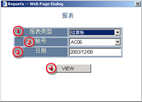
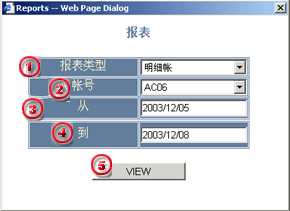

报表
本系统提供两种报表方式：
用户可通过主窗口中的菜单访问报表对话框。
结算帐
结算帐是显示每天的帐户活动资金的变化状态和交易细节的报表，其中主要包含：
用户可通过主窗口的菜单栏直接打开结算帐窗口，在对话框出现后用户应选择和填写所需的请求信息。
| 1 | 报表类型 - 选择报表类型。 |

|
| 2 | 帐号 - 选择要输出结算帐的交易帐户。 | |
| 3 | 日期 - 选择要输出报表的日期。 | |
| 4 | View - 提交显示报表请求按钮。 |
当所有的请求信息都以填写完毕，按下 VIEW
按钮可显示报表窗口。
在报表窗口中用户就可进行报表打印了。
明细帐户是提供一定周期内交易帐户的结余描述信息，但其中没有包含浮动盈亏信息。
用户可通过主窗口的菜单栏直接打开结算帐窗口并可选择到明细帐窗口，在明细帐话框出现后用户应选择和填写所需的请求信息。
| 1 | 报表类型 - 选择明细帐。 |

|
| 2 | 帐号 - 选择要输出结算帐的交易帐户。 | |
| 3 | 从 - 选择要输出报表的开始日期。 | |
| 4 | 到 - 选择要输出报表的结束日期。 | |
| 5 | View - 提交显示报表请求按钮。 |
当所有的请求信息都以填写完毕，按下 VIEW 按钮可显示报表窗口。 在报表窗口中用户就可进行报表打印了。